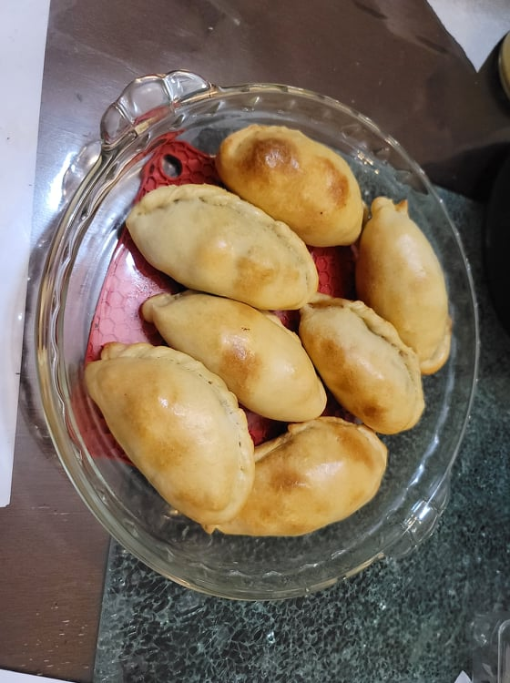

Empanadas

Ingredients:
Dough:
- 3 cups Flour
- 1 Egg yolk
- 1/2 cup Lard or Butter
- 1 cup Milk, warm
- 1/2 tsp Salt
Beef Picadillo Filling:
- 1 lb Ground beef, lean
- 2 tbsp Paprika
- 1/2 tbsp Cumin
- 2 tsp Chili powder
- 1 tsp Dried oregano
- Salt, to taste
- Pepper, to taste
- 1/2 cup Lard or Butter
- 2 White onions, diced
- Optional: 1/2 Red bell pepper, diced
- 1 bunch Scallions, about 6-7 scallions, finely chopped
- 3 Hard boiled eggs, chopped
- 1/4 cup Green olives, chopped
- 1 Egg + 2 tbsp Water, whisked
Instructions:
- Combine the dough ingredients in a large bowl. Knead until completely homogenous. It will still likely be clumpy at this stage. Form into a ball and cover with plastic wrap. Let rest in the fridge for at least 30 minutes or until ready to use.
- In a large bowl, combine the ground beef, paprika, cumin, chili powder, dried oregano, salt, and pepper.
- Melt the butter in a large pan over medium heat. Add in the onions and bell pepper and sauté until soft, about 7-8 minutes. Then add in the beef mixture. Cook until browned completely, adding salt and pepper if needed. Remove from heat and mix in the scallions, boiled eggs, and olives.
- Remove the dough from the fridge. If left in the fridge overnight, it may take about 30 minutes to soften up again. Form the dough into 1.5 ounce balls and place into a bowl covered with a damp towel.
- Preheat an oven to 400 degrees Fahrenheit.
- Roll out a dough ball into a flat disc. Place a scoop of filling and wet the rims of the disc with a little water. Seal the empanada with your fingers and then twist and fold along the seam to tightly seal. Place onto a parchment paper lined baking sheet covered with a damp towel. Repeat until you use up all the dough and filling.
- Brush over the tops of the empanadas with the egg wash (egg whisked with water). Place into the oven and let cook for 20-25 minutes, or until the empanadas look golden. Then remove from the oven. If any empanadas leaked, remove immediately from the baking sheet to prevent them from getting soggy. Serve hot.